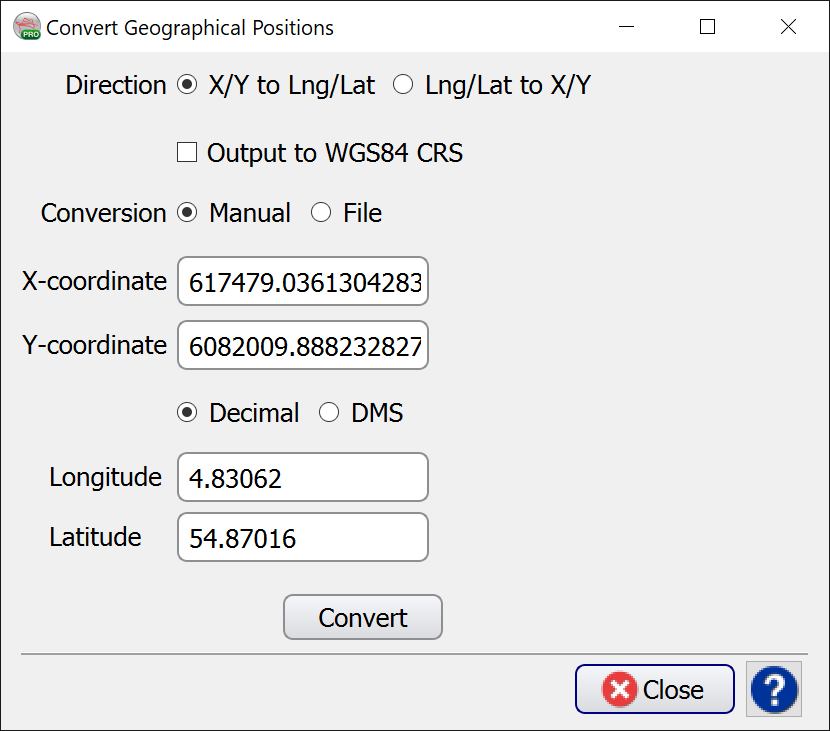

4.1.3.4.1 Convert Geographical Positions
If the selected Coordinate System for the survey is a Projection Based System, then this option becomes available on the right-hand side of the Coordinate System tab of the Edit Survey window via .
This utility allows conversion of X/Y coordinate pairs to geographical latitude and longitude, and vice versa:

There are two modes available for coordinate conversion:
- In Manual mode, the user specifies an X/Y pair (or Lat/Long pair), then press the corresponding arrow key to obtain the position in the other domain.
- In File mode, the user browses the input file and create a new output file. By specifying the corresponding type conversion (XY to Lat/Long or Lat/Long to XY) and pressing the Convert button, the desired conversion is written on output file.